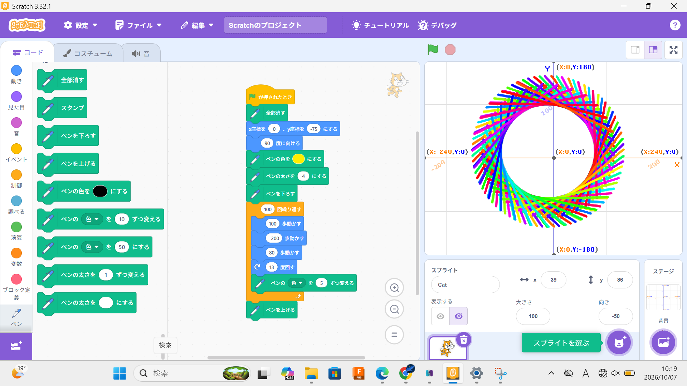
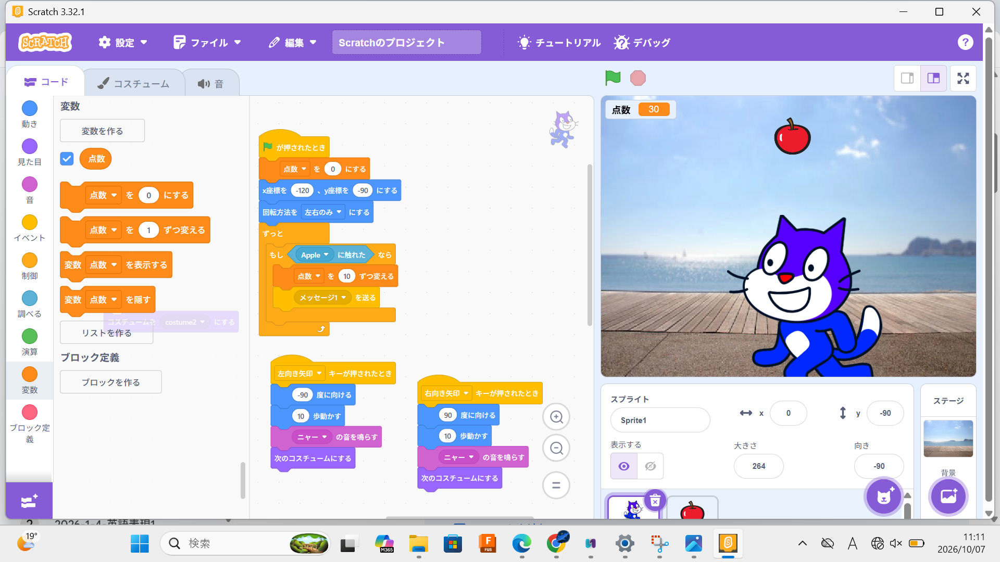

1週目のレポート ： 公大高専１年実習I-1
4b班40番 KeN-87
第1週目
1-1 サイエンスアート

1.内容
Scratchを用いて三種類の円を描いた。一つ目は線だけで描くシンプルな円、二つ目は猫を前後に動かし何本もの直線で円を描いた。
三つ目は二つ目と同様に何本もの直線を使うが、角度をそれぞれ変えて描いた。
2.感想
Scratchは小学校や中学校でやったことがあったが、左右前後に動かすくらいでしかやったことがなかったので円を描くというちょっと複雑な
ことができて楽しかった。
1-2 ゲーム

1.内容
Scratchを用いてりんごキャッチゲームを作った。リンゴが猫に触れたらリンゴが消え点数が入る。矢印キーで操作をできる
ようにして進むごとに猫の足が交互に動くようになっている。
2.感想
私は何かをキャッチするゲームっぽいものを作ったことはあるが、何かを拾ったときに点数付けたり鳴き声をつけたりしていなかったので
ゲーム自体はシンプルだったけど楽しめた。
1-3 ホームページ作成
私のホームページ
1.内容
githubというホームページを作成できるサイトにログインし、私だけのホームページも作成した。ホームページには
、 特徴・特技や趣味・嗜好を書いた。
自分で考えて作成する（50文字以上．100文字程度を推奨．※生成AIを使ってはいけない）
2.感想
私のホームページも作ったのは始めてだった。ネットにはたくさんのホームページがあるが、
どうやって作成しているか知らなかったので学べてよかったし、楽しかった。
各ページへのリンク
1週目のレポート
2週目のレポート
3週目のレポート
私のホームページ